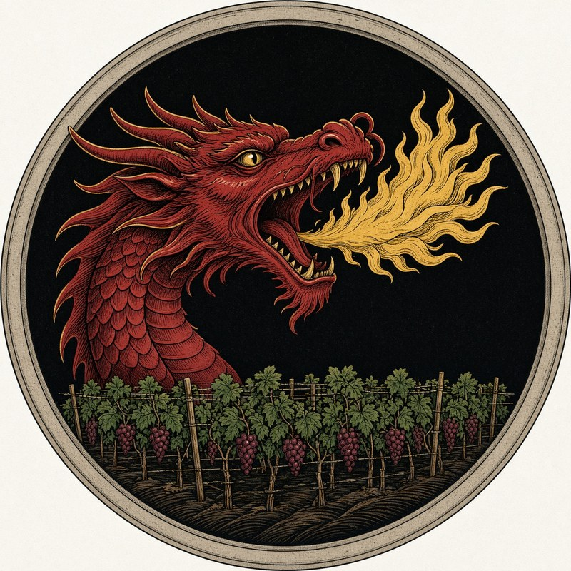
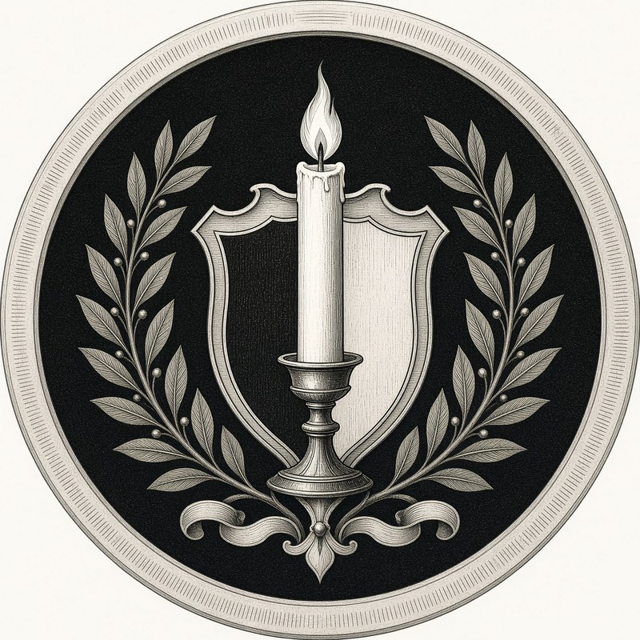
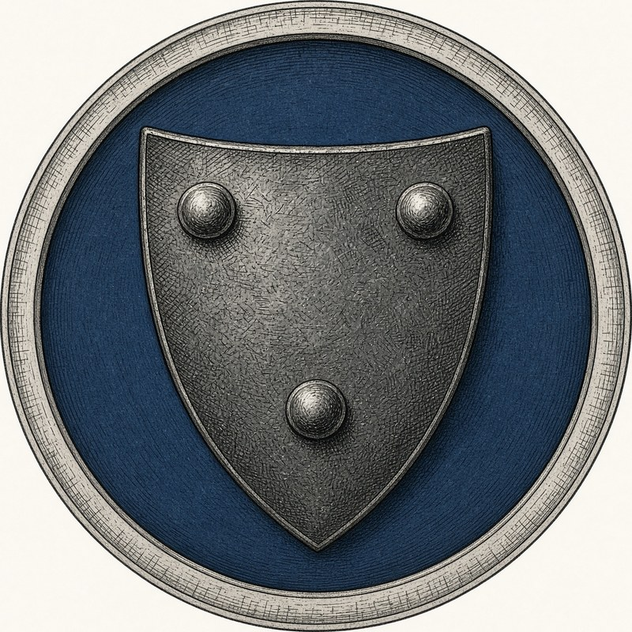
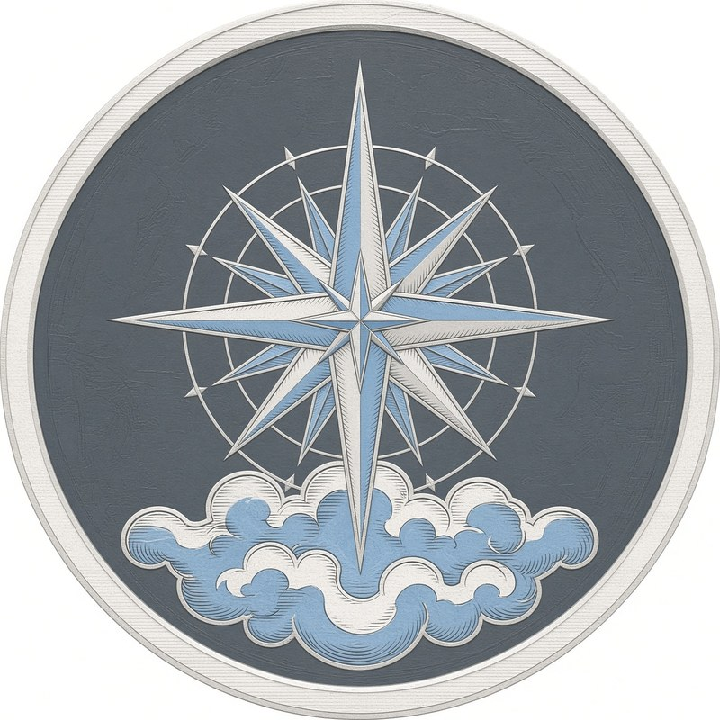
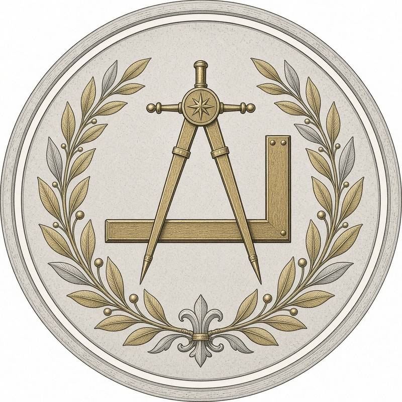

Noble Houses
The great families of the Ivory Pavilion, and the heir each has backed in the struggle for the throne.
The Flame — backing Prince Rand Dederic

House ValcourThe War Drakes
House HallowThe Zealots
House SterlingThe Iron Traditionalists
The Coin — backing Princess Raenessa Leclair
 House Solvane
House SolvaneThe Eye — backing Prince Bilal Dederic
- House MontroseThe Keepers

House GrixThe Sky-Mappers
House CalithThe Architects